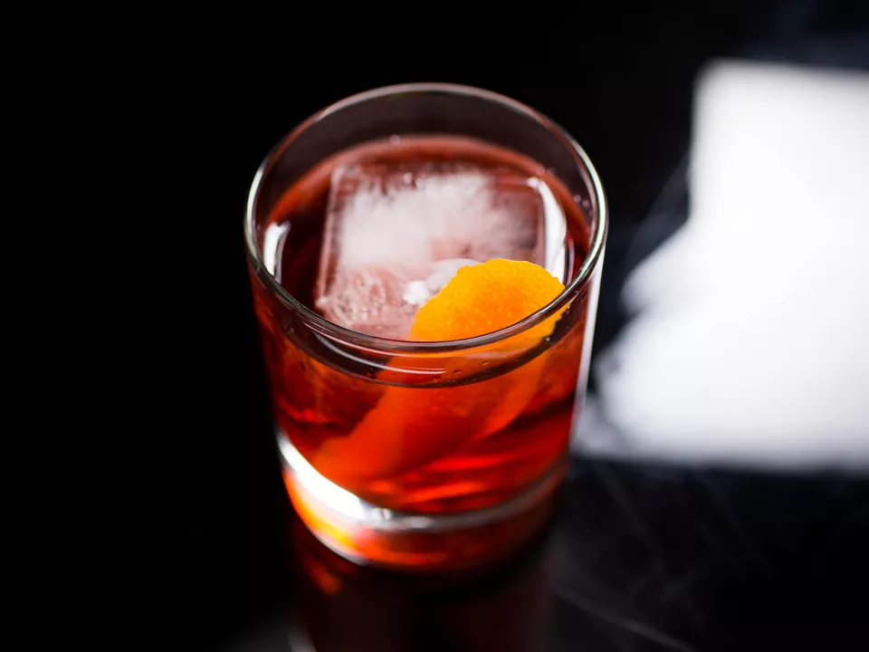

Negroni
30ml Gin
30ml Italian red bitter liquer
30ml Sweet vermouth
Add all ingredients to a mixing glass filled with fresh ice, stir until the
drink has reached your desired dilution level, strain into a chilled rocks
glass, add fresh ice and garnish with a zest of orange.
